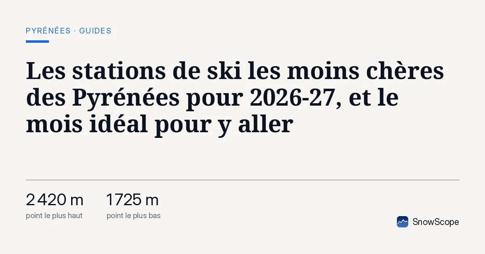

Les stations de ski les moins chères des Pyrénées pour 2026-27, et le mois idéal pour y aller
Les Pyrénées sont les plus grandes montagnes les moins chères à skier en Europe de l'Ouest : Cauterets vend un forfait journée adulte à 46 EUR et Boí Taüll à 49 EUR. Mais le timing compte plus ici que dans les Alpes. Dans notre historique d'enneigement sur 46 hivers passés, aucune des six stations comparées n'a une seule semaine avec 50 cm de neige 9 hivers sur 10, et décembre est généralement maigre.
Consultez les prévisions neige en temps réel pour Cauterets Cirque du Lys sur l'application SnowScopeHauteurs de neige, alertes poudreuse et carte 3D, gratuitement.
Six stations des Pyrénées comparées par prix
Cauterets est la moins chère à 46 EUR par jour au tarif public, et 276 EUR pour 6 jours. Boí Taüll en Catalogne coûte 49 EUR. Le forfait commun Astún-Candanchú coûte 54,5 EUR en ligne et 59,5 EUR à la billetterie, et le Grand Tourmalet, le plus grand domaine français de la chaîne, 55 EUR par jour ou 294 EUR pour 6 jours.
Les prix de Grandvalira en Andorre changent selon la date : 62,5 EUR en ligne et 72 EUR à la billetterie pour le lundi 14 décembre 2026. Baqueira Beret est la plus chère des six, 70 EUR par jour avec sa carte rechargeable et 74 EUR avec un billet classique, ou 359 EUR pour 6 jours.
Pourquoi décembre est un pari ici
Les Pyrénées sont plus basses que les Alpes et plus proches de l'Atlantique et de la Méditerranée, donc les tempêtes de début d'hiver apportent souvent de la pluie en bas des pistes. À mi-montagne, un mois de décembre habituel offre 34 cm à Cauterets, 28 cm à Astún, 26 cm au Grand Tourmalet et à Grandvalira, 25 cm à Boí Taüll et 20 cm à Baqueira Beret.
Janvier change la donne. Aux mêmes altitudes, on a généralement 72 cm à Cauterets, 66 cm à Astún, 60 cm à Boí Taüll, 57 cm au Grand Tourmalet, 54 cm à Grandvalira et 44 cm à Baqueira. Cauterets a aussi le plus de semaines avec 50 cm sur au moins la moitié des hivers : 15, devant Astún avec 14.
Nos choix pour un séjour pas cher dans les Pyrénées
Cauterets offre le meilleur rapport qualité-prix sur les deux plans : le prix le plus bas et l'enneigement habituel le plus profond des six. Son secteur du Cirque du Lys est petit, 25 km de pistes balisées, mais il se trouve dans un cirque qui conserve bien la neige. Astún-Candanchú est la réponse espagnole, deux domaines sur un seul forfait au-dessus de Canfranc, avec des remontées dès 1 659 m.
Boí Taüll possède les remontées les plus hautes de la liste, de 2 039 m à 2 747 m, ce qui aide lors des journées douces. Pour un grand domaine, Grandvalira offre 136 km de pistes balisées ; réservez en ligne et choisissez des jours de semaine hors vacances pour payer le tarif le plus bas.
Quand réserver
Pour une semaine pas chère avec de la neige, visez la mi-janvier au début de mars, hors vacances scolaires françaises et espagnoles. La seconde quinzaine de janvier offre généralement le meilleur compromis : neige suffisamment profonde, pistes tranquilles et prix normaux. Si vous n'avez que décembre, attendez une vraie chute de neige avant de réserver, et gardez le séjour court.
La plupart de ces prix valent pour tout l'hiver 2026-27, mais Grandvalira et les autres tarifs dynamiques augmentent à mesure que la date approche. Réserver tôt en ligne reste le moyen le plus simple d'économiser.
Dormir pas cher dans les Pyrénées
Les villages de vallée sont l'astuce budget : le village de Cauterets lui-même, Canfranc pour Astún-Candanchú, les villages de la Vall de Boí, ou Soldeu et les vallées andorranes pour Grandvalira. La carte de cet article montre des hébergements à moins de 110 EUR la nuit pour la semaine du 16 au 23 janvier 2027 près de nos quatre coups de cœur.
Consultez toujours le bulletin avalanche avant de skier hors-piste, et n'oubliez pas que les routes de montagne des Pyrénées peuvent nécessiter des chaînes après une tempête.
Conseils aux skieurs
- Moins cher et plus enneigé : Cauterets, 46 EUR par jour et 72 cm en janvier habituel à mi-montagne.
- Meilleur mois : la seconde quinzaine de janvier, hors vacances scolaires.
- Décembre dans les Pyrénées : réservez seulement après une vraie chute de neige.
- Grandvalira et les autres tarifs dynamiques : achetez en ligne, tôt, en semaine.
Autres cartes (sites externes)
Références et crédits
- N'PY, Cauterets official ski pass prices 2026-27 www.n-py.com/fr/cauterets/forfaits-ski
- Boí Taüll, official lift pass prices (tarifes) pirineu365.cat/boitaull/estacio/tarifes/
- Astún, official lift pass prices (tarifas 26-27) astun.com/forfaits/
- N'PY, Grand Tourmalet official ski pass prices 2026-27 www.n-py.com/fr/grand-tourmalet/forfaits-ski
- Grandvalira, official ski pass booking (online price for 14 December 2026, read 2026-11-13) www.grandvalira.com/en/ski-pass/day
- Baqueira Beret, official prices (tarifas), season 26-27 www.baqueira.es/es/tarifas
À propos de ces chiffres
Chiffres de neige : historique SnowScope, 46 hivers passés (1980-81 à 2025-26) à trois altitudes de la station (une estimation pour une zone, pas les bulletins de la station). Remontées, pistes et accès : les sources ci-dessous, vérifiées à la date indiquée.
Citer ce bulletin
Pour la recherche, l'enseignement ou la presse : chiffres et graphiques réutilisables librement sous CC BY 4.0 avec cette citation.
SnowScope (2026), Les stations de ski les moins chères des Pyrénées pour 2026-27, et le mois idéal pour y aller, https://snowscope.app/blog/fr/2026/11/cheapest-ski-resorts-pyrenees-2026-27-prices-snow.html, consulté le 2026-11-19
SnowScope (Atlas Labs). (2026, November 19). Les stations de ski les moins chères des Pyrénées pour 2026-27, et le mois idéal pour y aller. SnowScope snow reports. https://snowscope.app/blog/fr/2026/11/cheapest-ski-resorts-pyrenees-2026-27-prices-snow.html
BibTeX
@misc{snowscope2026cheapestskiresortspyrene,
author = {{SnowScope (Atlas Labs)}},
title = {Les stations de ski les moins chères des Pyrénées pour 2026-27, et le mois idéal pour y aller},
year = {2026},
month = nov,
howpublished = {\url{https://snowscope.app/blog/fr/2026/11/cheapest-ski-resorts-pyrenees-2026-27-prices-snow.html}},
note = {Published 2026-11-19 14:57 UTC; accessed 2026-11-19}
}· CC BY 4.0 · Méthodes, données et outils →
Suivre Cauterets Cirque du Lys
Gratuit : un message quand la neige arrive, et la météo chaque matin.